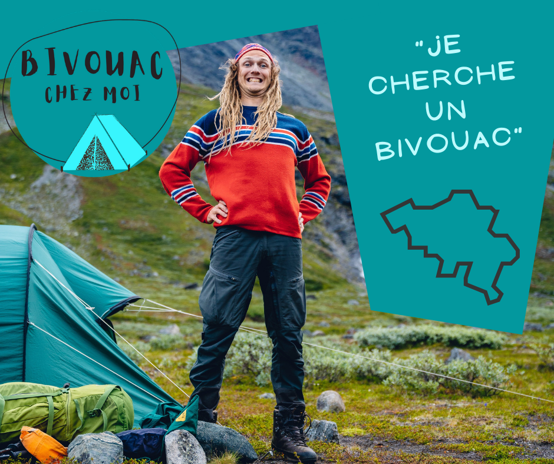

Bienvenue sur la plateforme de partage d’emplacements de bivouac du Club Alpin Belge.

La plateforme
La plateforme se base sur un réseau de membres qui mettent gratuitement à votre disposition un emplacement pour y bivouaquer une nuit. Il s'agit d'une initiative de partage et de rencontre, sans but lucratif. Cette plateforme est une initiative du Club Alpin Belge pour créer des contacts et des liens, prioritairement entre ses membres.
Le Club Alpin Belge décline toute responsabilité en cas de perte, dommage ou blessure survenu(e) lors de l'utilisation du site Web et/ou lors de votre séjour à des emplacements proposés. En contactant un hôte sur cette plateforme, vous reconnaissez avoir lu toutes
les Règles du Bivouac et vous vous engagez à les respecter scrupuleusement.
AVANT de bivouaquer
Les bivouacs renseignés sont des propriétés privées non libres d’accès.
Contactez toujours l’accueillant pour obtenir son accord explicite à l’avance en précisant :
- la date,
- le nombre de personnes,
- l’heure prévue d’arrivée,
- si vous êtes membre du Club Alpin Belge (n°de membre),
- toute autre information utile éventuelle.
Respectez les conditions et recommandations de l’accueillant. Prévenez dès que possible en cas de désistement. Le fait que d’autres randonneurs y soient installés ne signifie pas que l’accès vous est autorisé, entre autres parce que chaque lieu accueille un nombre de personnes maximum, parce qu’être membre du CAB peut-être une exigence ou pour toute autre raison qui appartient au propriétaire.
Merci de respecter ses choix et décisions.
La nuit en bivouac
Durée maximale du séjour
Le bivouac se fait toujours, par principe, pour une nuit.
Commodités
L’accès à d’éventuelles commodités et installations peuvent varier d'un site à l'autre. Celles-ci sont généralement intégrées à la description du site. S’il n’y a pas d’accès possible, il est de la responsabilité du demandeur d’en tenir compte.
Par exemple, il n’est pas question de laisser du papier hygiénique trainer dans les alentours : reprenez TOUS vos déchets. Quelques bons ouvrages (« Comment chier dans les bois » entre autres) sont recommandés pour les randonneurs inexpériméntés.
Respect de la nature
Tous vos déchets doivent être enmenés. Le site doit être dans l’état où vous l’avez trouvé au moment de votre départ (ou plus propre). Le bruit est une pollution et le tapage nocturne commence, partout, à partir de 22 h !
Amusez-vous !
C'est une excellente occasion de se rencontrer et de s'amuser ! Soyez curieux, partagez des histoires et faites de nouvelles amitiés!
APRES le bivouac
Partagez vos vécus !
Envoyez nous vos expériences, vos vécus, vos recommandations, vos gratitudes, vos moments simples et vos moments forts via l’adresse
bivouac@clubalpin.be.
Autant que possible, nous les partagerons sur ce site et, régulièrement, dans la revue du Club Alpin Belge (Ardennes & Alpes).
Contact
En cas de soucis n'hésitez pas à nous envoyer un mail à
bivouac@clubalpin.be pour nous signaler le problème.
Partagez la plateforme
Partagez cette plateforme : elle ne fonctionnera que grâce au partage. Si vous avez profité d’une rencontre, d’un lieu, pensez à rendre la pareille et incitez d’autres à proposer des emplacements.
Cet outil a été créé sur base du code source de https://welcometomygarden.be/ et adapté pour les membres du Club Alpin. Nous remercions sincèrement les auteurs de cette plateforme pour leur sens du partage.